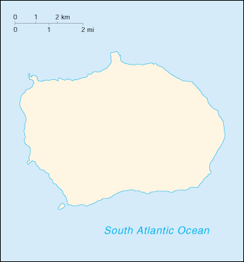

![[Country Flag of Bouvet Island]](../flags/bv-lgflag.jpg)
| Bouvet Island |
|
        |  | |
| Geography |
Location: Southern Africa, island in the South Atlantic Ocean, south-southwest of the Cape of Good Hope (South Africa)
Geographic coordinates: 54 26 S, 3 24 E
Map references: Antarctic Region
Area:
total:
58.5 sq km
land:
58.5 sq km
water:
0 sq km
Area - comparative: about 0.3 times the size of Washington, DC
Land boundaries: 0 km
Coastline: 29.6 km
Maritime claims:
territorial sea:
4 nm
Climate: antarctic
Terrain: volcanic; maximum elevation about 800 m; coast is mostly inaccessible
Elevation extremes:
lowest point:
Southern Ocean 0 m
highest point:
unnamed location 780 m
Natural resources: none
Land use:
arable land:
0%
permanent crops:
0%
permanent pastures:
0%
forests and woodland:
0%
other:
100% (93% ice)
Irrigated land: 0 sq km (1993)
Natural hazards: NA
Environment - current issues: NA
Geography - note: covered by glacial ice; declared a nature reserve
| People |
Population: uninhabited (July 2000 est.)
| Government |
Country name:
conventional long form:
none
conventional short form:
Bouvet Island
Data code: BV
Dependency status: territory of Norway; administered by the Polar Department of the Ministry of Justice and Police from Oslo
Flag description: the flag of Norway is used
| Economy |
Economy - overview: no economic activity; declared a nature reserve
| Communications |
Communications - note: automatic meteorological station
| Transportation |
Ports and harbors: none; offshore anchorage only
| Military |
Military - note: defense is the responsibility of Norway
| Transnational Issues |
Disputes - international: none